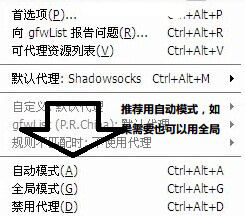
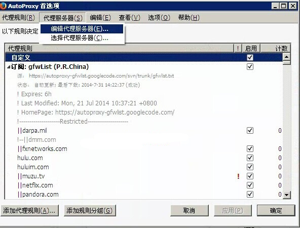
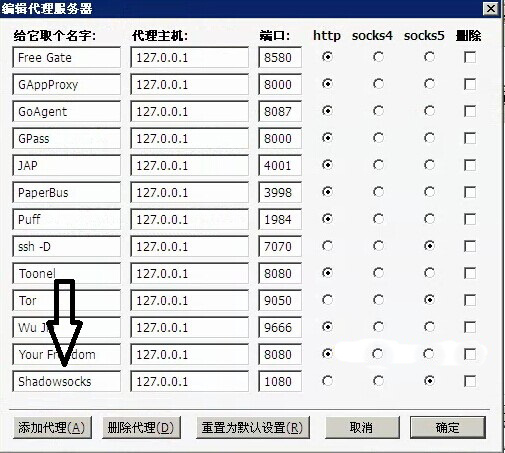
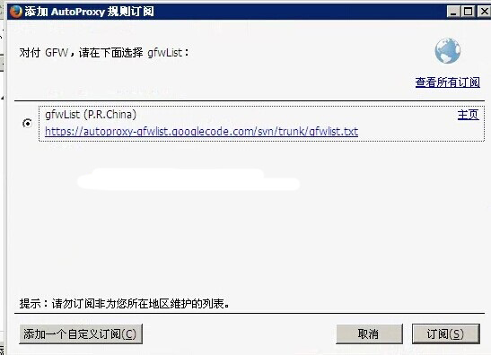

影梭 Shadowsocks
Windows系统firefox浏览器使用影梭教程
在windows系统中，有时候我们需要单独对浏览器进行设置，本文介绍 Firefox浏览器单独设置影梭的教程。

firefox
一、Firefox 下的 AutoProxy 2015031118 修复版
由于 AutoProxy 的作者没有更新，新的版本无法在 Firefox 27.0 以后进行代理规则设置，所以我们用 xthunder 作者 的修复版，下载链接
http://fxthunder.com/files/autoproxy.xpi
如果您无法访问，也可以摸这个链接：
http://pan.baidu.com/s/1bn2Refd，提取密码：5usw
下载好这个 .xpi 文件后，直接拖入任何 Firefox 窗口，然后安装重启浏览器即可。之后点击右上方新出现的小地球图标，进行设置
点击首选项

依次点击 代理服务器 >> 编辑代理服务器

新增加一个名称为 Shadowsocks 设置好本地的端口，类型为 socks5

然后点击 代理规则 >> 增加代理规则

订阅 GFW List

然后保存，可以设置全局代理，也可以设置自动代理，推荐使用自动代理，只针对某一批网站走代理，然后右上方的小地球图标会变成蓝色（自动模式）或绿色（全局模式）